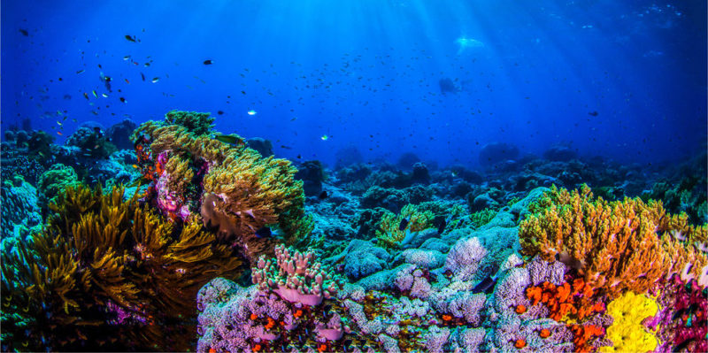

La restauración, conservación y uso sustentable de los bosques nativos permite asegurar la salud y la calidad de vida de las personas y de la biodiversidad que los habita.
Los bosques son proveedores de servicios ecosistémicos esenciales para la vida. Ayudan a mitigar el cambio climático, regulan los ciclos de agua dulce, contribuyen a la seguridad alimentaria y al desarrollo económico.
-Fomentamos un buen aprovechamiento de los recursos naturales y actividades agropecuarias responsables con el ambiente.
-Restauramos los paisajes forestales, junto a las comunidades locales, para recuperar los servicios ecosistémicos.
-Concientizamos sobre la importancia de conservar los bosques nativos.
Argentina es uno de los países con mayor número de ecorregiones del mundo, se encuentra dividida en 18, donde en ellas habita una gran biodiversidad, pero la conversión y degradación de los hábitats amenaza su existencia.
En relación a nuestros objetivos de conservación, y a la situación de algunas de ellas, definimos seis especies como prioritarias para nuestro trabajo.
Los océanos cubren aproximadamente el 70% de la superficie del planeta, son el hogar de la mitad de la biodiversidad y sustentan cientos de comunidades pesqueras. Producen la mitad del oxígeno que respiramos y son los grandes reguladores del clima.
Sólo aquí habitan 400 especies de peces, 55 especies de tiburones, 930 especies de moluscos, 83 especies de aves marinas, 47 especies de mamíferos marinos, 5 especies de tortugas y muchas otras, como invertebrados.
-Concientizamos sobre la importancia de conservar el mar. Impulsamos el enfoque de paisaje y la planificación espacial marina.
-Promovemos la sustentabilidad en pesquerías a través de la ciencia pesquera y brindamos herramientas para mejorar la transparencia en la información.
- Promovemos la creación y el manejo efectivo de áreas marinas protegidas, persiguiendo una mayor representatividad y conectividad de los ecosistemas del mar argentino.